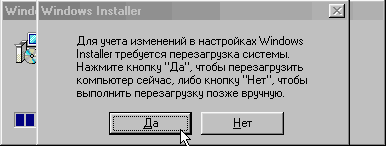
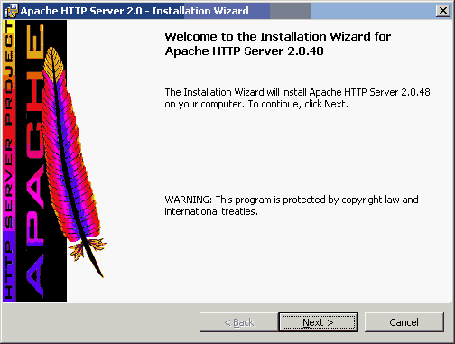
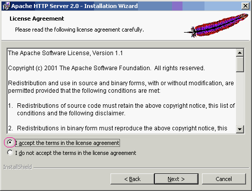
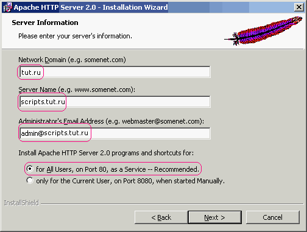
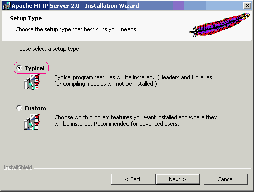
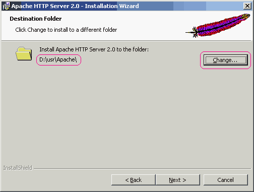
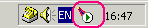

|
<<<
Вступление | Установка Perl
>>>
 |
|
|
Итак, Вы решились установить на свой компьютер
Apache для Windows 200*/NT/XP. В таком случае Вам
следует запастись терпением и для начала скачать
дистрибутив с официального сайта Apache: http://httpd.apache.org/download.cgi.
Каждый файл там сопровождается цифровой подписью PGP с
аналогичным именем файла, но другим расширением. Не
перепутайте собственно файл и удостоверяющую его
подпись. Текущая версия - apache_2.0.48-win32-x86-no_ssl.msi, но
к тому моменту, когда Вы будете читать это, могут
появиться и более свежие релизы.
Пакет установки создан в формате Windows
Installer. Если Вы уже устанавливали Office
2000, то Installer у Вас наверняка уже есть
(в этом можно убедиться, поискав папку Installer
в каталоге Windows). Хотя скачать его с сайта на
всякий случай не мешает - вдруг имеющаяся у Вас версия
устарела?

Теперь определитесь с директорией, в которую Вы
будите устанавливать Apache. Все дальнейшие рассуждения
основаны на том, что Вы выбрали для этой цели такой
каталог: D:\usr\Apache.
Вы можете поставить Apache на любой другой диск, только
тогда Вам придется немного тяжелее при выполнении всех
остальных действий. Нужно будет все указываемые пути
заменять на Ваши собственные, а это крайне неприятно.
Еще раз настоятельно рекомендуем воспользоваться диском
D:\.
- Запустите только что скачанный файл инсталляции. В появившемся
диалоге нажмите кнопку Yes, а затем - кнопку
Next.

- Прочитайте лицензионное соглашение и поставьте
галочку на против "I accept the terms in the
license agreement", как показано на рисунке ниже,
и нажмите на кнопку Next.

- В следующем окне нужно написать:
а) Netvork Domain - имя Вашего домена
б)
Server Name - Имя Вашего сервера
в)
Administrator's Email Addres - Ваш почтовый
адрес.
г) For All Users, on Port 80, as a
Service - Сделать доступным для всех пользователей
на 80 порт

- В следующем окне выберите установку
"Typical" и нажмите кнопку Next

- Теперь нажмите кнопку Browse укажите для
установки директорию D:\usr\Apache
и нажмите Next и подождите, пока будут
копироваться файлы Apache..

- На запрос о перезагрузке компьютера ответьте
"Перезагрузить".
Поздравляем - Apache установлен! Если все прошло
успешно, то Вы сможете запросить свой первый документ по
адресу http://localhost/. Веб - страница,
которую Вы увидете, находится в каталоге DocumentRoot - по умолчанию, это
D:\usr\Apache\Apache2\htdocs\.
|
|
|
|
|
|
|
|
Внимание! Это - самый ответственный момент
установки. Просим соблюдать инструкции
БУКВАЛЬНО.
- В директории D:\usr\Apache\Apache2\conf
находится файл httpd.conf,
откройте его. Это - единственный файл, который
необходимо настроить. Вам предстоит найти и изменить в
нем некоторые строки, а именно те, о которых
упоминается далее. Во избежание недоразумений не
трогайте всё остальное. Следует заметить, что в нем
каждый параметр сопровождается несколькими строками
комментариев, разобраться в которых с первого раза
довольно тяжело. Поэтому не обращайте на них внимание.
- В поле Listen укажите номер порта на
котором будет работать Apache, по умолчанию стоит
80:
лучше так и оставить, но если он занят другой
программой, тогда его нужно будет изменить на другой
свободный порт. Не забудьте, если Apache использует
другой порт, тогда Вам придётся всегда его указывать в
ссылках, например на порт 8080 будет ссылка выглядеть
так http://127.0.0.1:8080
- В поле ServerAdmin укажите Ваш E-mail
адрес, который будет показываться в сообщениях об
ошибке сервера. Например:
- В поле ServerName напишите любое слово - на
работе это не сказывается, например:
Только не забудьте раскомментировать поле
ServerName, то есть убрать символ "#" перед
этим параметром (по умолчанию он закомментирован)!
- В поле DocumentRoot укажите ту директорию,
в которой будут храниться Ваши html-файлы,
например:
Разумеется, можете указать и любую другую
директорию, если хотите. В любом случае, не
забудьте ее создать, лучше сделайте это прямо
сейчас!
- Найдите блок, начинающийся строкой
<Directory /> и заканчивающийся
</Directory> (вообще, такие блоки
обозначают установки для заданной директории и всех ее
поддиректорий). Его нужно изменить на:
<Directory />
Options Indexes Includes
AllowOverride All
</Directory> |
Таким образом, в этом блоке будут храниться
установки для всех директорий по умолчанию (т.к. это -
корневая директория).
Возможные значения параметров:
- ExecCGI - разрешить выполнение
CGI-сценариев в данном каталоге и его поддереве;
- FollowSymLinks - разрешить
переходы по символическим ссылкам (создаваемым
командой ln);
- Includes - разрешить SSI (Server
Side Includes);
- Indexes - разрешить выдачу
листинга каталога, если в нем нет файла index.html
(или файла индекса, заданного директивой
DirectoryIndex);
- MultiViews - разрешить поддержку
многих языков; по умолчанию она отключена, и
включать ее, как правило, не нужно; поддержка
перекодирования "на лету" для русского языка
устанавливается с помощью других директив, которые
мы рассмотрим позже;
- All - установить сразу все
перечисленные режимы кроме MultiViews
- Найдите аналогичный блок, начинающийся
<Directory "d:/usr/Apache/htdocs"> и
заканчивающийся </Directory>. Там будет
много комментариев, не обращайте на них внимание. Этот
блок следует заменить на:
<Directory "D:/www">
Options Indexes Includes
AllowOverride All
Order allow,deny
Allow from all
</Directory> |
Это - установки для директории с Вашими
html-документами. Если хотите, можете установить
другую директорию, главное, чтобы она совпадала с той,
которая прописана в параметре DocumentRoot
- Идем дальше. Установите UserDir, например
так:
Это будет директория, в которой хранились бы
домашние страницы пользователей, если бы это был
настоящий Web-сервер, а также корневые каталоги
виртуальных хостов (см. ниже). Не забудьте также
создать этот каталог.
- Установите DirectoryIndex так:
DirectoryIndex index.html index.htm |
Это - так называемые файлы индекса, которые
автоматически выдаются сервером при обращении к
какой-либо директории, если не указано имя
html-документа. В принципе, можно добавить сюда и
другие имена, например, index.phtml, если Вы
будите работать с PHP и т.д.
- Найдите и пропишите такой параметр:
ScriptAlias /cgi-bin/ "d:/cgi-bin/" |
Да, именно так, с двумя слэшами. Это будет та
директория, в которой должны храниться Ваши
CGI-скрипты. Если хотите, можете задать другое имя,
например:
ScriptAlias /mycgi/ "d:/mycgidir/" |
Подобный параметр говорит Apache о том, что, если
будет указан путь вида
http://localhost/cgi-bin, то на самом деле
следует обратиться к директории D:/cgi-bin.
- Теперь следует найти и настроить блок параметров,
начинающийся с <Directory "D:/cgi-bin"> и
заканчивающийся </Directory>. Это -
установки для Вашей CGI-директории (если Вы установили
для нее другое имя на предыдущем шаге, соответственно
модифицируйте путь). Там должно быть:
<Directory "D:/cgi-bin">
AllowOverride All
Options ExecCGI
</Directory> |
- Теперь найдите строку AddDefaultCharset.
Там должно быть:
AddDefaultCharset ISO-8859-1 |
измените
так:
AddDefaultCharset WINDOWS-1251 |
Эта строка отвечает за кодировку в которой хранятся
на диске Ваши файлы.
- Настройте следующий параметр:
AddHandler cgi-script .bat .exe .cgi .pl |
Это говорит Apache о том, что файлы с расширением
.exe и .bat нужно рассматривать как
CGI-скрипты.
- И последнее - установите:
AddHandler server-parsed .shtml .shtm .sht |
Или, если Вы хотите, чтобы и обычные файлы html
обрабатывались SSI, напишите так:
AddHandler server-parsed .shtml .shtm .sht .html .htm |
Поздравляем - Вы настроили свой Apache, и он должен
уже работать! Для запуска сервера нажмите
Пуск->Программы->Apache HTTP Server->Control
Apache Server->Start при этом появится окно,
очень похожее на Сеанс MS-DOS, и ничего больше не
произойдет. Не закрывайте его и не трогайте пока оно
само не закроется.
Ещё появится в трее иконка, с помощью которой можно
запускать и отключать сервер Apache

Вот шаги, которые можно проделать для проверки
работоспособности сервера:
- Проверка html. В директории d:\www.
Создайте файл index.html,
например с таким содержанием:
<HTML>
<BODY>
<H1>УРА! Сервер работает!</H1>
</BODY>
</HTML> |
Теперь запустите браузер и наберите:
http://localhost/index.html или
просто http://localhost/
Загрузится Ваш
файл.
- Проверка CGI: в директории D:/cgi-bin
для CGI-скриптов создайте файл test.bat
с таким содержанием:
@echo off
echo Content-type: text/html
echo.
echo.
dir |
Теперь в браузере наберите: http://localhost/cgi-bin/test.bat В
окне отобразится результат команды DOS dir.
(Хотелось бы отметить, что указанный тест работает не
на всех версиях Windows, иногда вместо того, чтобы
выполнить файл test.bat, Apache выводит в
браузер его содержимое. С чем это связано - не совсем
ясно, однако, кажется, можно избавиться от указанной
ошибки путем манипулирования с Реестром. Если у Вас
test.bat не запускается, не расстраивайтесь:
вряд ли Вы когда-нибудь будете писать скрипты в виде
bat-файлов, тем более, что это несовместимо с Unix.)
- Проверка SSI: аналогична проверке html.
Создайте файл test.html с таким
содержанием:
<!--#include virtual="/cgi-bin/test.bat"--> |
Если bat - файлы Ваш Apache запускать не
хочет (см. выше), то дождитесь установки Perl или PHP.
Если что-то пошло не так, окно Apache
открывается и тут же закрывается, или выдаёт следующее
сообщение
Syntax error on line 57 of
D:/usr/Apache/Apache2/conf/httpd.conf
:
ServerRoot
must be a valid directory
Note the errors or
messages above, and press the <ESC> key to
exit. 17...23... |
это значит, произошла ошибка - в httpd.conf.
|
|
|
|
|
|
|
|
Вступление:
Сначала немного теории, чтобы объяснить, что нам
сейчас придётся делать. Я думаю, вам будет проще, если я
не просто объясню, какие кнопки нажимать, а расскажу,
зачем и для чего именно это делать.
Каждый сервер в Internet имеет свой четырёхзначный
номер типа ххх.ххх.ххх.ххх - так называемый IP-адрес.
При каждом подключении к сети ваш провайдер выделяет Вам
один номер из имеющихся у него. За отдельные деньги
можно получить постоянный номер.
Кроме того, чтобы избавить всех от кошмара
запоминания двенадцатизначных номеров серверов, были
придуманы простые для использования буквенные имена типа
"www.название.com" - которые, опять же, покупаются за
отдельные деньги. Буквенные имена привязываются к
IP-адресам регистраторами. Когда ваш браузер печатает в
статусной строке "Looking up for domain
www.chto-nibud.com" он ищет IP-адрес, который
сопоставлен этому самому www.chto-nibud.com, связывается
с ним и выдаёт вам вебстраницу.
IP-адрес состоит из четырёх цифр от 0 до 255,
разделённых точками. Зачастую по номеру можно узнать,
какой стране и провайдеру он принадлежит. Адреса,
начинающиеся с 127.* и 255.*, зарезервированы для
специальных целей. Так, пакет, направленный на
начинающийся с 255.* адрес, теоретически должен быть
разослан всем подключённым к сети машинам. Слава богу,
большинство маршрутизаторов такие пакеты уничтожают, не
пересылая - а то каждые пять секунд в Интернете
находился бы идиот с шилом в одном месте, который ради
интереса пихал бы что-нибудь на этот адрес ко всеобщей
радости.
А вот адреса, начинающиеся с 127.* всегда указывают
на локальный компьютер. Те, в ком есть страсть к
экспериментаторству, могут попробовать прямо сейчас
сделать ping по любому такому адресу:
C:\> ping 127.1.2.3
Обмен пакетами с 127.1.2.3 по 32 байт:
Ответ от 127.1.2.3: число байт=32 время<10мс TTL=128
Ответ от 127.1.2.3: число байт=32 время<10мс TTL=128
Ответ от 127.1.2.3: число байт=32 время<10мс TTL=128
Ответ от 127.1.2.3: число байт=32 время<10мс TTL=128
|
Для этого не нужно включать модем или подключаться к
локальной сети - все адреса 127.*.*.* - к вашим услугам.
То есть мы можем использовать любой из 2553 =
16,5 млн. доступных нам адресов, начинающихся на
127.*, не рискуя занять чей-то чужой номер и не прося ни
у кого разрешения.
Наберите в своём браузере адрес http://127.0.0.1/ и Вы … ничего не
увидите. И это нормально, потому что вы пока не
запустили вебсервер на своей машине. Только после его
запуска Вы увидите не сообщение "Сервер не найден
- невозможно отобразить страницу", а страницы
своего сайта.
Думаю, Вы уже начинаете беситься, думая, какого чёрта
меня потянуло делать это лирическое отступление. Ладно,
мы уже почти добрались до конца. Как Вы поняли, мы будем
использовать адреса в диапазоне 127.*.*.* под
тестируемые сайты. Если у вас их две штуки, один
привяжете к 127.0.0.2, а другой - к 127.0.0.3, если
десять - займёте ещё. Вопрос в том, что не очень удобно
обращаться к ним по IP-адресам - было бы удобнее
использовать буквенные обозначения. Отсюда проблема -
как заставить Ваш компьютер сопоставить 127.0.0.2 адресу
www.mycoolwebsite.ru так, как он сопоставляет IP-адрес
207.46.230.219 имени microsoft.com?
Обычно, когда Вы набираете в адресной строке microsoft.com или linux.org.ru, вашему браузеру нужно
узнать IP-адрес требуемого сервера. Сначала он ищет его
у себя в кэше а затем обращается к DNS-серверу вашего
провайдера - а всё это время Вы любуетесь на строчку
"Поиск узла nnnn..." ("Looking up for
domain nnnn..."). Но перед этим происходит ещё
один этап - Windows обращается к файлу HOSTS, в котором
могут перечисляться сопоставления IP'шников адресам.
Этот файл унаследован ещё от старых систем тех времён,
когда все компьютеры, входящие в Интернет, можно было
перечислить в одном файле. В Windows NT этот файл
называется C:\WINNT\system32\drivers\etc\hosts.
В Windows 9x его обычно не существует, и для того, чтобы
его создать, найдите файл C:\WINDOWS\hosts.sam
и скопируйте его в файл C:\WINDOWS\hosts
(безо всякого расширения!) Вот как этот файл обычно
выглядит:
# (C) Корпорация Майкрософт
(Microsoft Corp.), 1993-1999
#
# Это образец
файла HOSTS, используемый Microsoft TCP/IP для
Windows.
#
# Этот файл содержит сопоставления
IP-адресов именам узлов.
# Каждый элемент должен
располагаться в отдельной строке. IP-адрес должен
#
находиться в первом столбце, за ним должно следовать
соответствующее имя.
# IP-адрес и имя узла должны
разделяться хотя бы одним пробелом.
#
# Кроме
того, в некоторых строках могут быть вставлены
комментарии
# (такие, как эта строка), они
должны следовать за именем узла и отделяться
# от
него символом '#'.
#
#
Например:
#
# 102.54.94.97 rhino.acme.com # source server
# 38.25.63.10 x.acme.com # x client host
127.0.0.1 localhost
Если нужное имя будет найдено там, обращения к DNS не
потребуется. Если Вы будете заниматься тестированием
своего сайта с помощью домашнего вебсервера, в этот
момент никто не станет дозваниваться до провайдера,
чтобы подключиться к DNS - всё успешно пройдёт и в
офлайне.
Предположим, Вы собираетесь тестировать на домашнем
компьютере сайт http://pupkin.ru/. Откройте файл HOSTS в
Блокноте и добавьте в его конец строчку
127.0.0.2 www.вашсайт.вашпровайдер.ru
Одновременно тестируете ещё три сайта? Нет проблем,
добавляйте строки
127.0.0.3 www.ещёсайт.вашвторойпровайдер.ru
127.0.0.4 www.ваштретийсайт.вашчетвёртыйпровайдер.ru
127.0.0.5 пятыйсайт.вашзабугорныйпровайдер.com
Теперь все запросы, выдаваемые вашим браузером,
адресуются вашему же компьютеру. Закончили тестирование,
закачали файлы на сайт и хотите посмотреть, как всё
выглядит - удалите ненужную строчку из файла
HOSTS и перезапустите браузер (Windows
перезагружать не надо). Браузер перестанет обращаться к
локальному компьютеру и полезет дозваниваться до вашего
Интернет-провайдера. Кстати, удалять ненужную строчку из
файла HOSTS насовсем не требуется -
добавьте в её начало символ "#" и Windows её
проигнорирует.
Да, отдавайте себе отчёт, что все изменения, которые
Вы вносите в файл HOSTS,
касаются только вашей системы. Если Вы захотите показать
сайт, подключённый, например, к 127.11.22.33, вашему
другу, компьютер которого подключён к вашей сети, Вам
придётся найти в ней свободный “настоящий”, не
начинающийся на 127.*, IP адрес, прикрепить сайт к нему
и внести изменения в DNS-сервер вашей сети. Но это -
тема другого, гораздо более глубокого разговора - если
интересно, попросите объяснений у вашего сисадмина - за
кружкой пива за ваш счёт он Вам всё расскажет.
Итак, Вы установили Apache. Получили, таким образом,
директорию d:/www для
хранения документов и d:/cgi-bin
для CGI. Но вот беда: в Интернете Вы поддерживаете
несколько серверов, а Apache создал для Вас только один.
Конечно, можно структуру этих нескольких серверов
хранить на одном сервере, однако проще и удобнее было бы
создать несколько виртуальных хостов с помощью
Apache, например, один с именем serv1 и адресом
127.0.0.2, а другой - с именем serv2 и
адресом 127.0.0.3. (Конечно, вместо
"serv1" и "serv2" Вам нужно будет указать
желаемые имена Ваших виртуальных хостов. Советуем
назвать их так же, как и на Вашем настоящем Web-сервере
- это может многое упростить при программировании
скриптов.)
Как это принято в Unix, каждый сервер будет
представлен своим каталогом в директории d:/home с
именем, совпадающим с именем сервера. Например, сервер
serv1 будет храниться в директории d:/home/serv1,
которую Вам необходимо создать прямо сейчас. В этой
директории будут находиться:
- файл access.log
с журналом доступа к виртуальному серверу.
- файл errors.log
с журналом ошибок сервера.
- директория www,
где будут храниться html-документы.
- директория cgi
для хранения CGI-программ.
Последние две директории (www и
cgi) Вам
тоже необходимо создать прямо сейчас.
Далее, для установки виртуального хоста необходимо
сделать некоторые изменения в файле конфигурации Apache
httpd.conf, а также в некоторых файлах Windows.
Вот необходимые действия:
- Откройте директорию d:\usr\Apache\Apache2\conf.
Откройте находящийся там файл httpd.conf.
Перейдите в его конец, Вам предстоит добавить туда
несколько строк.
- Пропишите следующие строки в конце файла после
всех комментариев:
#----serv1
<VirtualHost 127.0.0.2>
ServerAdmin webmaster@serv1.ru
ServerName serv1
DocumentRoot "d:/home/serv1/www"
ScriptAlias /cgi/ "d:/home/serv1/cgi/"
ErrorLog d:/home/serv1/error.log
CustomLog d:/home/serv1/access.log common
</VirtualHost> |
При желании можно добавить и другие параметры
(например, DirectoryIndex и т.д.) Вообще, не
переопределенные параметры наследуются виртуальным
хостом от главного.
- Теперь надо немного подправить системный файл
hosts,
который находится в - C:\Windows\system32\drivers\etc
- это обычный текстовый файл, и в нем обычно заранее
прописана только одна строка:
именно эта строка и задает соответствие имени
localhost адресу 127.0.0.1. (Ради
справедливости следует сказать, что имя
localhost работает и без указанной выше
строки.) Для нашего виртуального хоста надо добавить
соответствующую строчку, чтобы файл выглядел
так:
127.0.0.1 localhost
127.0.0.2 serv1 |
Этим Вы создадите виртуальных хост со
следующими свойствами:
- Имя - serv1
- Доступен по адресу http://serv1 (или
http://127.0.0.2).
- Расположен, соответственно, в директории D:/home/serv1.
- Директория для хранения документов - D:/home/serv1/www,
доступная по адресу http://serv1/.
- Директория для CGI - D:/home/serv1/cgi,
доступная по адресу http://serv1/cgi/
- Файлы журналов хранятся в D:/home/serv1
Ну вот, мы создали один виртуальный хост! Если будет
необходимо сделать второй, нужно просто проделать
аналогичные действия, заменив параметры, связанные с
расположением хоста на диске. Главное, не забудьте в
этом случае указать другой IP-адрес (лучше всего
указывать их последовательно, начиная с
127.0.0.2, затем 127.0.0.3 и т.д. - в этом
случае все работает корректно). Желательно также для
этих целей не указывать IP-адрус
http://127.0.0.1, так как это - адрес главного
сервера.
Кстати, необходимо заметить, что главный хост
(невиртуальный, тот, который мы создали в разделах 1 и
2) по-прежнему доступен по адресу
http://127.0.0.1 или http://localhost.
Более того, его директория cgi-bin
"видна" всем созданным виртуальным хостам, так что Вы
можете ее использовать.
И последнее: если описанная выше схема настройки
виртуальных хостов у Вас не заработала, обратитесь к списку
часто задаваемых вопросов в конце этой статьи.
|
|
|
|
|
<<<
Вступление | Установка Perl
>>>
|

 JavaScript
JavaScript HTML
HTML Tiny Web
Tiny Web
 HtmlPad
FisherMan
HtmlPad
FisherMan AceHTML Freeware
AceHTML Freeware Bred
2
Bred
2 Оптимизатор
HTML
Оптимизатор
HTML Редакт. МЕТА тегов
Редакт. МЕТА тегов MySQL-Front
MySQL-Front AceFTP Freeware
AceFTP Freeware TV On-line
TV On-line Радио
Радио DivX
Видео
DivX
Видео Мультяхи
Мультяхи Мега-Поиск
Мега-Поиск
.gif)